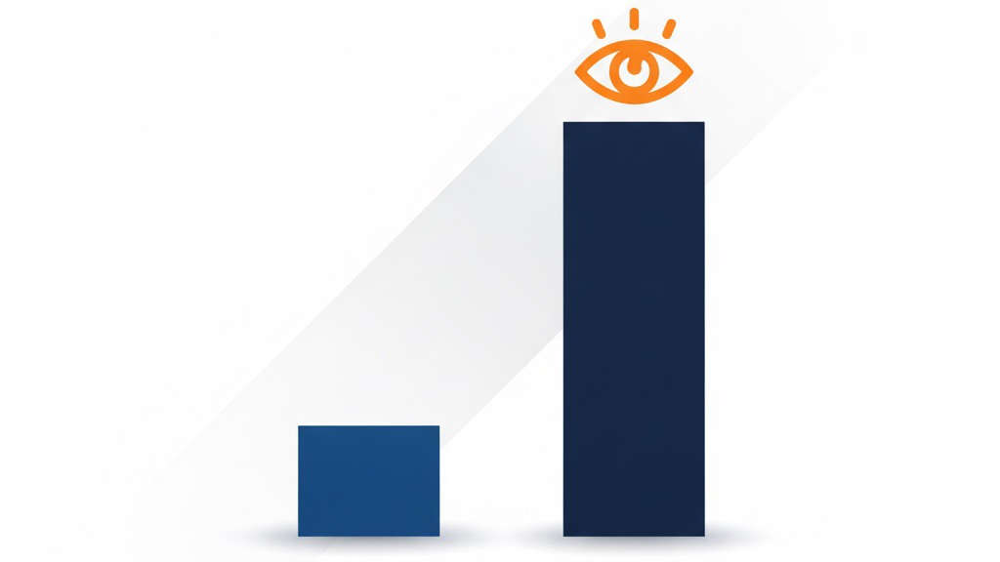

🔭
才能の差は5倍、意識の差は100倍
―― 会社は「見たい景色」の解像度で決まる ――
同じ環境でも、伸びる人と伸びない人がいます。その差の根は、スキル（才能）ではなく「意識」にある――というのが、ヤシノミの考え方です。
ただ、この話には続きがあります。では、その意識は誰がどうやって上げるのか。私は、これは本人の気合いの問題ではなく、会社の側の設計の問題だと思っています。
才能は過去が作る。意識は今が作る
- 才能（差は5倍）：過去の経験・積み上げで決まる、再現性のある“技術”。
- 意識（差は100倍）：いま何を見て、何を感じ、何を取りに行くか。“姿勢”と“解像度”。
才能は過去が作る。意識は「今をどう生きるか」でしか生まれません。
会社は、社長の「景色の解像度」より大きくならない
これは精神論ではなく、視界の上限の話です。人は、自分が感じ取れるもの以上の価値を望めません。社長が「見たい景色」を持っていない限り、会社はそこに到達しない。
だからヤシノミは、意図的に前に進みます。新しい事業を立ち上げ続けるのは、売上のためだけでなく、景色を更新するためでもあります。

豚メンチと牛メンチの話
ぼんやり食べていると、豚肉と牛肉の違いに気づけないことがあります。違うことすら分からない。一方、料理を真剣に学びながら食べる人は、味・香り・食感の差が“情報”として入ってくる。
この「違いが分かる」状態こそが、意識です。そして仕事もまったく同じ。
・意識が向いているとき … 改善点・仮説・次の一手が見える
・意識が向いていないとき … 作業の完了しか見えない
同じ時間・同じ職種でも、ここで成果は大きく開きます。
ただし、ここを「意識の低い人がいる」で終わらせてはいけない、といつも自分に言い聞かせています。違いが見えないのは、その人の人格の問題ではなく、たいてい置かれている状態の問題だからです。次はその話を書きます。
「意識を持て」と言う前に、会社がやることがある
意識は、発破をかけても上がりません。やる気を出せと言われて出るやる気は、その場かぎりです。私が変わると思っているのは、次の2つが本人の中に育ったときです。
- 「自分はこれをやれる」という手応え（難しい言葉だと自己効力感と呼ばれます）
- 「これでいい」と自分を認められる感覚（同じく自己肯定感）
順番を勘違いしやすいところだと思っています。結果が出れば自信がつく、ではありません。先に「自分はやれる」という感覚がある人ほど、行動の質も量も上がって、その結果がついてくる。私自身、独立してしばらくは順番を逆に考えていて、うまくいっていない自分を責めるほど動けなくなりました。
手応えは、研修ではなく「事業」の中でしか生まれない
手応えは、講習を受けても身につきません。実際の仕事で、自分の判断がお客さまや数字に届いた、という経験でしか育たないと思っています。だからヤシノミは、そういう経験が生まれる仕事そのものを、事業としてつくることをこれからの課題に置いています。
そのうえで、大事だと思っていることが2つあります。
- 答えを渡しすぎない。人は「やらされている」と感じた瞬間に力が出なくなり、「自分で決めた」と思えるときに一番力が出ます。だから相談には乗るけれど、結論を先に置かない。ここは私がいちばん失敗しやすいところです
- 適性を見極めるのは、本人ではなく会社の仕事。向いていない場所でいくら頑張ってもらっても、手応えは生まれません。「合わないのは本人の努力不足」ではなく、置き場所を間違えた側の責任だと考えるようにしています
正直に言うと、まだ全然できていません
ここまで書いておいて申し訳ないのですが、いまのヤシノミにこれができているかというと、まったくできていません。まだ小さな会社で、仕組みと呼べるものにはなっていない。できているのは「これをやろう」と決めて、意識して手をつけ始めたところまでです。
それでもこの記事に書いているのは、数年後に読み返して答え合わせをするためです。できていないことをできているように書くほうが、私はこわい。ここを読んでいる方には、いまのヤシノミの現在地として受け取っていただければと思います。
「いま持っているもの」が見えているか
もうひとつ、意識という言葉に含めたいものがあります。いまの環境をありがたいと思える力です。
ただ、これを「感謝しなさい」と言うつもりはありません。私自身、独立した直後――商品がなく、融資に何度も落ちて、口座の残高が減っていく時期には、周りにあるありがたさなんて一つも見えていませんでした。いま思えば十分に恵まれていたのに、見えていなかった。
見えなくなるのは、たいてい心に余裕がないときです。だとすれば、これも精神論ではなく設計の話になります。余裕をつくる側に回るのが、会社の仕事です。
そして、ここは記事のはじめに書いた話とつながります。豚と牛の違いに気づけるかどうかと、いま自分が持っているものに気づけるかどうかは、同じ「解像度」の話です。仕事の解像度が上がる人は、たいてい身近な人への感謝にも気づける。逆もまた同じだと感じています。
今日からできる最小行動
・1日1つ「違い」を拾って共有する（Slackでも）
・1つだけ「仮説→小さく検証」を回す（結果も残す）
だからヤシノミは、違いに気づける人・学ぼうとする人・景色を更新する人であり続けたい。役職や日常生活でも同じで、身近な人への感謝に気づけることも、意識の表れだと考えています。
ヤシノミの考え方を、もっと読む